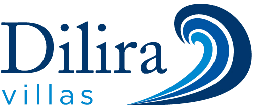
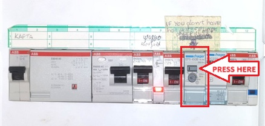

We are honored that you have selected our property for your holidays. We are committed to providing you with an enjoyable and comfortable stay.
For any comments or assistance, you can reach us at:
This is a guide that can help you during your stay! Please first click on the "Important Info" tab to view essential details about the villa. Then, feel free to explore the other tabs for any specific sections of the guide that interest you!
Your comments and experiences are important to us and help improve our services. If you like you can review us on Google and follow us on Facebook and Instagram.
Reception services are available
Monday to Saturday, from 09:00 am to 14:00 pm. The reception is located on your right hand as you enter the main gate.
We have provided you with one set of keys, a card and a controller. The controller is to open the main gate so you can enter our property. With the key, you can open the door of your villa, and you have to place the card at the point with the sign next to the door so you can have electricity.
Network: DILIRA VILLAS
When you connect, a pop-up page will appear.
You can find username and password behind the entrance door.
Check-in time is at 16:00 PM.
Check-out time is at 11:00 AM
Early check-in and late check-out are available if needed, upon request, and only when there are no other guests checking in or out on the same day.
Every 3 or 4 days the bed sheets and the white towels (for bath) are changed and the house is cleaned. Due to the water shortage in Crete, if you're happy to reuse your towels a bit longer, please hang them up so the cleaning staff knows not to replace them. If you don't need for a sheets change, please inform us.
The water in the villas is heated by solar panels. If water is not warm enough, you can switch on the boiler. You can find the fuses panel next to the main door (for villa Lida and Diana) or in the basement (for villa Rami) and press the button that says "for warm water press here" on the designated boiler fuse switch. Press on and wait for 20min aprox. The boiler switch closes automatically. If water temprature isn't high enough press again and wait.

Kitchen stoves are touch control, so you have to press at specific points to turn them on (video). Also you can press the lock sign to lock your stoves for children safety. If you have any difficulty, please ask for help at the reception.
In the kitchen, there are two taps. Please use the small tap for drinking water.
Please do not let children unattended at the pool and do not jump or dive. We are not responsible for any consequences due to non-compliance with the rules. Please make a shower (there is an outdoor shower beside the pool) before you enter the pool, so you can wash off any sunscreen that you may have used.
In Greece, we don't throw toilet paper into the toilet, as it can block the plumbing. Please discard it in the small bathroom bin instead.
You can leave your trash outside the villa between 9:00 AM and 1:00 PM every day, except Sundays. Please avoid leaving it out in the afternoon, as cats might tear open the bags and spread the rubbish.
If you need transport services, we collaborate with a reliable driver. Call Rami-Alex at +30 6949654865 to help you arrange any transfer during your stay.
There are several mini markets in the area. The first two on the list are accessible by foot. If you want to buy a lot of things it’s better to go to a big supermarket in Heraklion like Sklavenitis, so it is cheaper for you. Sklavenitis also does delivery via phone at +30 2810377800 but not online yet. You can browse their products and see photos of the groceries through the e-food platform.
If you want to order food, Oregano "The Grill Project" delivers to Dilira for a minimum order of 35 €. Find the menu on the table.
Tel:+30 2810 371 556
Rakadika are traditional Cretan taverns where people gather to enjoy raki (a strong local spirit), meze (small dishes), music, and great company. Head to the city center and then to Kagiampi street ,where you can find plenty of them.
Enjoy authentic Cretan cuisine with a private chef, featuring fresh local ingredients and traditional flavors.
For bookings contact Rami
Café-Bars and Clubs you can find in the area and at Heraklion.
Sail from Heraklion to Dia Island on a modern and large sailing yacht and try water activities, such as SUP paddleboarding and snorkeling. Enjoy an authentic Mediterranean meal and unlimited drinks.
For bookings contact Rami
Explore the abandoned Ghost Village of Achlada, visit the Fodele Village, birthplace of El Greco, and discover Crete’s untouched backlands with stunning mountain and coastal views.
For bookings contact Rami
Call: +30 6936922801 or visit EuroDiving
Visit Kreta Surf or call +30 6942460990
Horse riding at Amoudara Beach
For bookings contact Rami
And many more to discover while walking into the city! Find more info here. Also check the free walking tour
Some gorges & walking trails that you can visit near the villa are:
Your feedback is very helpful! Tell us how we can improve this guide here.
If you enjoyed your stay, visit our website for future bookings at www.dilira.gr